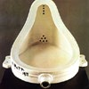
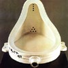

|  |  |
Apparentemente casuale e non programmato, l'uso del cinema da parte di Marcel Duchamp ha radici più profonde e motivazioni più sfumate che in altri pittori. I suoi esperimenti cinematografici vertevano sulla possibilità di riprendere gli oggetti in movimento da diversi punti di vista in modo da metterne in luce la poliespressività. In questa direzione di ricerca Duchamp giunge ai suoi "dischi" e successivamente ai "rotorilievi, che costituiscono il tema centrale del film "Anémic Cinéma"; solo in parte di animazione in quanto i movimenti dei dischi concentrici erano ottenuti con mezzi meccanici.
Con i suoi dischi rotanti Duchamp si propone di raggiungere il punto in cui l'illusione della profondità o del rilievo, ottenuta con la spirale rotante, produce a sua volta l'illusione di cerchi concentrici in superficie. Alle spirali, con il loro effetto di profondità/rilievo, si alternano le scritte, con il loro effetto di superficie. Veniamo così costretti a un continuo passaggio dalla tridimensionalità (illusoria) dell'effetto plastico alla superficie in cui sono tracciati i "jeux de mots", i quali intaccano le false evidenze degli enunciati scritti e ci aprono alla dimensione labirintica dei doppi sensi.
In quell'"oltre la pittura" (e quindi l'arte) in cui si colloca la ricerca estetica (o più propriamente "anestetica") di Duchamp, l'uso del cinema, per quanto episodico, trova una motivazione precisa. Esso diventa macchina che congiunge gli opposti: il movimento circolare dell'apparecchio di proiezione si tramuta nella linearità della successione a scatti dei fotogrammi; la profondità e il rilievo si appiattiscono in superficie e viceversa.
In questa operazione, Duchamp sembra voler coinvolgere son solo l'apparato tecnico del cinema, ma tutto un sistema di produzione di senso (la profondità della visione prospettica, la "linearità" delle didascalie, ecc..) in un programma totalizzante di negazione dello statuto dell'arte.
Già nelle due versioni (1911 e 1912) del celebre "Nudo che discende una scala", Duchamp aveva utilizzato la fissazione fotografica delle varie fasi di un corpo in movimento. Le aveva utilizzate, secondo un principio fondamentale della sua poetica, come una sorta di propriezione della dimensione della pittura di un fenomeno (il movimento che si sviluppa nella quarta dimensione, il tempo, considerata letteralmente "invisibile").
Egli, infatti. s'ispira al cinema, che fornisce esempi di straordinaria bellezza della riproduzione meccanica, per ottenere la dinamizzazione di immagini astratte, per sperimentare una serie di ricerche nel campo della cinetica delle forme che è riscontrabile anche nella sua opera pittorica e negli oggetti (ready-made)che andava inventando e costruendo in quegli anni.
|  | |
Duchamp resta il "padre" indiscusso del Dadaismo proprio per la sua continua sfida alla rassicurante banalità, attraverso la pratica del ready-made combinata ocn il piacere dell'ironia. Egli ha saputo capovolgere il senso dell'approccio alle forme, vedendo in esse non solo la trascrizione di un significato assoluto e di una qualche Verità, ma l'attivazione di un processo di autoesplorazione della mente e di scavo dentro la propria confusa interiorità.